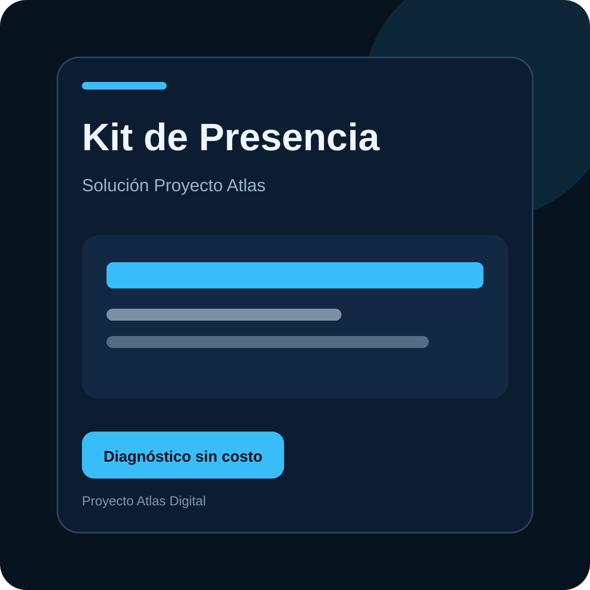
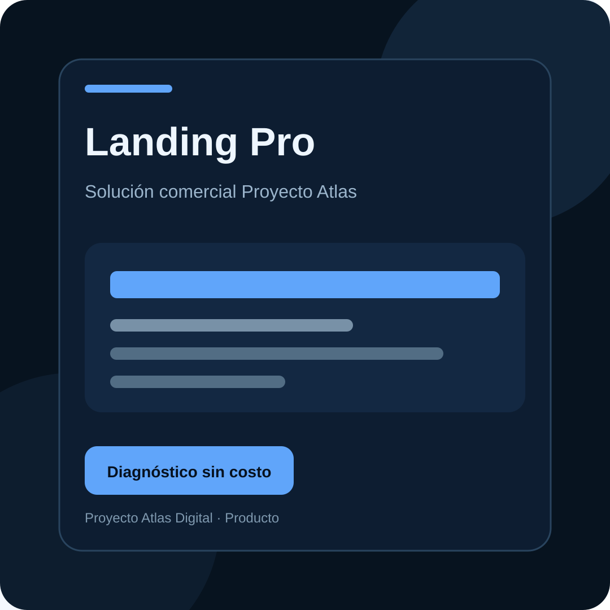
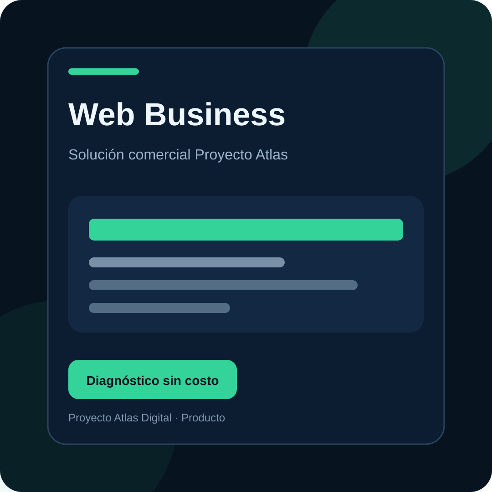
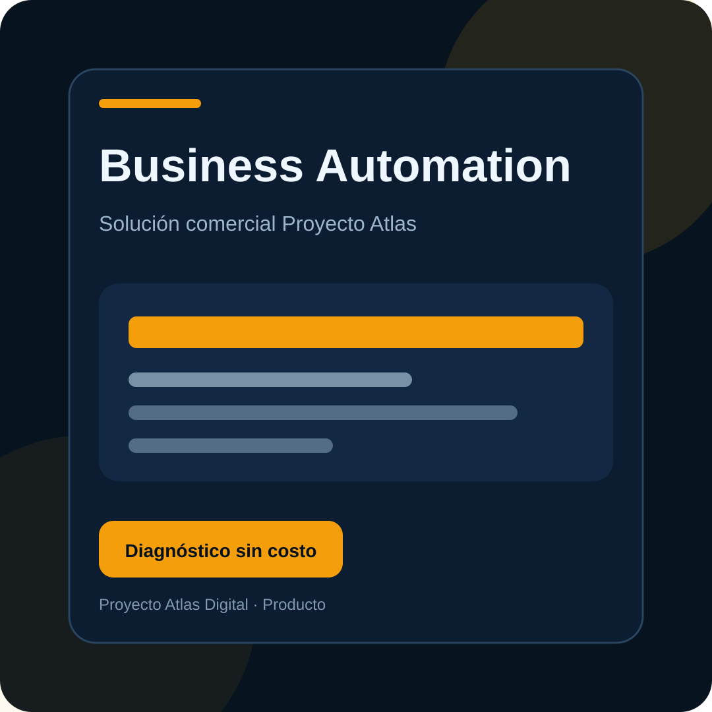
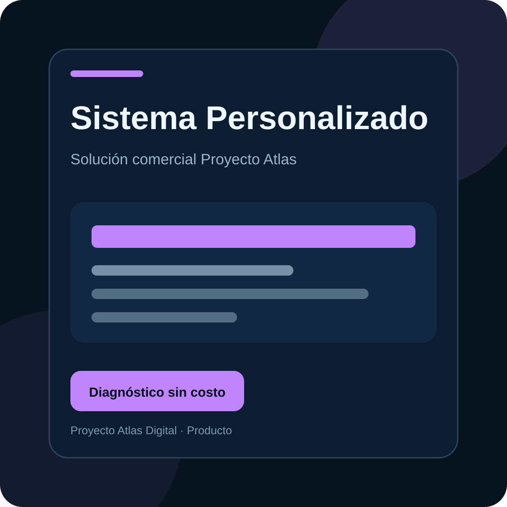

EntradaKit de Presencia Digital
$1,548.65
Micrositio + WhatsApp + formulario + mapa + redes + SEO básico. 3 bonos incluidos.
Entrega: 72 h

EntradaMicrositio + WhatsApp + formulario + mapa + redes + SEO básico. 3 bonos incluidos.
Entrega: 72 h

CaptaciónLanding enfocada en conversión, formulario, analítica y CTA a WhatsApp.
Entrega: 5–7 días

PrincipalSitio profesional para presentar servicios, generar confianza y captar prospectos.
Entrega: 7–10 días

CrecimientoCRM, formularios, automatizaciones y dashboard inicial.
Entrega: 10–20 días

A medidaSoftware diseñado alrededor del proceso específico del cliente.
Entrega: Por fases
Mantenimiento Digital: $590–990/mes
SEO Local: $990–1,990/mes
Automatización: desde $1,490/mes
Se ofrecen después de la implementación inicial; no son obligatorias.